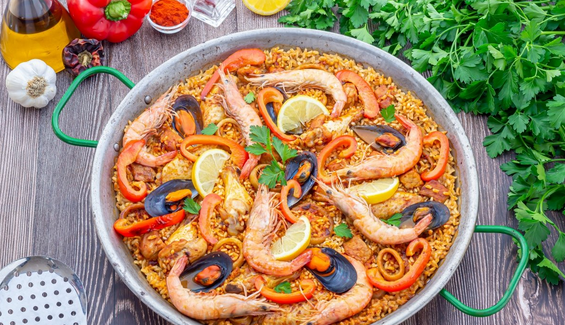

Paella
Ingredientes
- 400 g de arroz
- 700 ml de caldo de pollo
- Pollo y conejo troceados
- Judía verde y garrofó
- Pimentón, azafrán y sal al gusto

Pasos
- Sofreír las carnes y las verduras en aceite.
- Añadir el arroz y el caldo, remover y cocinar 18-20 minutos.
- Dejar reposar 5 minutos antes de servir.
- Servir caliente.
Descargar receta en PDF